Quotes
Use Quick Quote to price tires and services for a customer without opening a service request. You can save the quote, move it onto the appointment calendar, or convert it to a service request.
Start a quote
- On the Home Page, select Quick Quote . You can also start a quote from the Quick Quote tab or from New; QuickQuote.
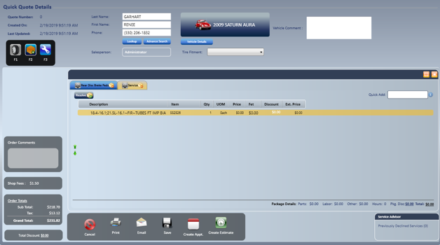
- Enter any one or combination of Last Name, First Name or Phone Number, and then select Lookup.
- Select the customer from the list, and then select Done.
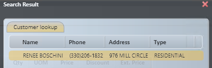
-
- If no results display, enter the first name, last name and phone number. These are required to save the quote.
- Select or add a vehicle.
- For an existing customer with vehicles, choose the vehicle and select Select Vehicle.
- If the customer has several vehicles, use the Filter option to narrow the vehicle list.
- Select the Tire Fitment from the drop-down list.
- For a new customer, select Start New Vehicle and complete the information you know.
- You must enter Year, Make, Model and Engine. At stores that use the TireGuide catalog, enter Year, Make, Model and Option.
- To skip vehicle selection and go straight to adding services, use these search buttons :
- F1: tire and wheel search only.
- F2: parts and labor search.
- F3: complete inventory search. The description field is searchable.
- For an existing customer with vehicles, choose the vehicle and select Select Vehicle.
Search for tires (F1)
If a vehicle and fitment were selected, or you created a vehicle and filled in its fitment, search results display automatically.
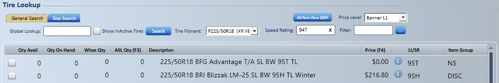
If no vehicle was added, the search screen opens without results.
- In Global Lookup, enter a simple tire size (for example, 2255018) and press Enter.
- You can filter the results by speed rating.
- You can filter the results by any part of the description.
- You can also narrow the search with any of the options shown below.
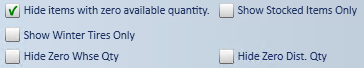
- Double-click the highlighted tire you want to select it, or select up to three tires to compare.
Compare tires with Tire Quote
Before you start: Tire Quote needs the Service Request - Tire Quote access right. If the Tire Quote (F2) button is missing on the tire lookup screen, your access rights do not allow it.
- After selecting up to three tires, select Tire Quote . The quote shows the selected tires with their features and their prices for quantities of 1, 2 or 4.
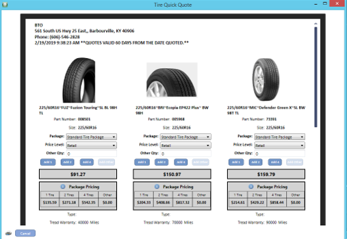
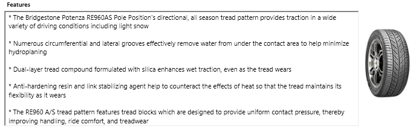
-
- You can print the Tire Quote.
- You can select the tires the customer chose and add them to the quote.
- Change the Package, Price Level, Tax Rate or Other Qty if needed. Other Qty is a quantity other than 1, 2 or 4.
- Use Include Add-Ons?, Include Road Hazard?, Include Nitrogen? and Include Tire Disposal? to choose which package items are included in the quoted price.
- Include Nitrogen? and Include Tire Disposal? show only if your store charges those fees. See Tire Package Fees.
Add tires without the tire package
- Select Add Selected Items to add the tires directly to the quote without the default tire package line items.
Tip: Use Add Selected Items for carry-out quotes or wholesale situations.
- Change the price if needed, either by typing it in or by adjusting the profit meter. What you can change depends on your access rights.
- Enter the information, and then select Done.
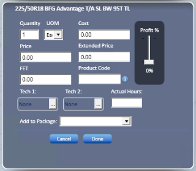
Add a package (F2)
Use the F2 screen to add a package from the list.
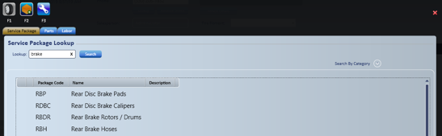
- In the Lookup field, enter a short part of the package description.
- Double-click the package you want.
- Follow the wizard through the catalog selections.
- When the wizard finishes, a message confirms that the package was added.
- Continue adding packages, or select X in the upper-right corner to close the screen.
Add parts by hand (F2)
Before you start: The Parts and Labor tabs are not shown at stores that use the TireGuide catalog. If the vehicle was typed in by hand and is not in the catalog, "Vehicle not found in catalog. Parts and Labor tabs would be disabled." displays and the tabs cannot be used.
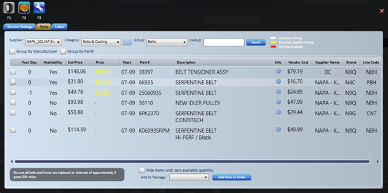
- Select the Parts tab.
- Select the supplier. The default suppliers display first.
- Select the category.
- Select the group.
- Instead, you can enter a keyword in Lookup and select Search. When Lookup has text, the search uses only that text and ignores Category and Group.
- Check the box to the left of the part you want. Pick a part whose availability shows YES.
- Select the package to add the part to.
- Select Add Parts to Order.
- Continue adding parts, or select X in the upper-right corner to close the screen.
Add labor by hand (F2)
- Select the Labor tab.
- Follow the same steps as for parts.
Note: The hourly rate comes from the store setting in TireWorks HD.
Search all inventory (F3)
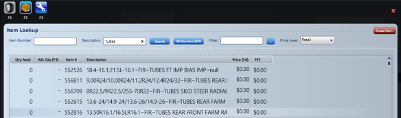
Use F3 to search your complete inventory by description.
- Double-click the item to add it.
- Fill in the dialog box as needed, and select the package to add the item to. The fields you can change depend on your access rights.
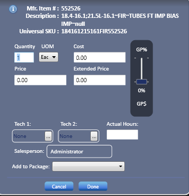
- Select Done.
- Continue adding items, or select X in the upper-right corner to close the screen.
Add a discount to a quote
You can add a discount by hand, or set up discounts and coupons to apply automatically.
- Select Total Discount at the bottom left of the quote screen, under the order totals.
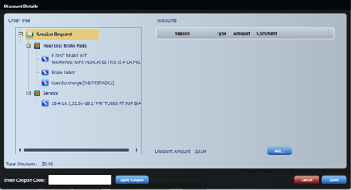
- Highlight the branch or the specific line item in the tree that the discount applies to.
- Select Add....
- Enter the Discount Type: a flat discount or a percentage discount.
- Select a reason code from the list.
- Enter comments if you want.
- Select Done.
Note: Discounts and coupons of different classes do not stack. The one that gives the customer the greatest benefit is used. Coupons of the same class can be combined. See Discount Maintenance.
Save or convert the quote
When the quote is ready, choose one of these options.
- Save: saves the quote, which then displays on the Quick Quote tab of the Home Page. If your store uses the Auto Cancel Quotes Duration setting, open quotes are canceled automatically after that many days, when someone logs in to the store.
- Create Appt.: moves the quote onto the appointment calendar.
- Create Service Request
 : converts the quote to a service request. If your store uses the Update Cost Upon QuickQuote Conversion setting, item costs may be refreshed from each item's default cost when the quote is converted.
: converts the quote to a service request. If your store uses the Update Cost Upon QuickQuote Conversion setting, item costs may be refreshed from each item's default cost when the quote is converted.
Note: Whether saving a Quick Quote or Appointment commits inventory depends on the store's Quotes Commit Inventory checkbox (Manage; Location Setup; Locations, Misc Settings tab). When it is not checked, inventory is not committed until the quote is converted to a service request.
Note: Order Validation rules also apply to Quick Quotes and Appointments. See Order Validation.